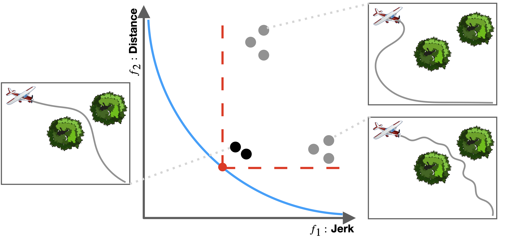

Abstract
Learning from demonstrated behavior (i.e., imitation) is an effective means of knowledge transfer in animals and humans. Existing imitation learning methods for artificial intelligence (AI) systems typically assume the capabilities of the imitator match those of the demonstrator. This can lead to undesirable behavior when the imitator?s capabilities significantly exceed those of the demonstrator. This project reformulates imitation learning for AI systems that are more capable than (human) demonstrators in some aspects by seeking to make the AI system unambiguously better than human demonstrators. The project will train graduate students and undergraduates to develop artificial intelligence systems that are better aligned with safety and utility requirements in a broad range of highly impactful future applications. The project approaches its reformulated imitation learning objective using a maximum margin optimization for guiding (deep) reinforcement learning of control/decision policies. It focuses on learning from heterogeneous demonstrations and tasks that differ in quality, difficulty, and structure. Initially, multiple metrics for assessing and comparing different behaviors are assumed to be available. Later in the project, these metrics will be learned from demonstrations and supplemental annotations using deep representation learning methods. The policies produced by the approach of this project will be evaluated on a diverse set of applications: open source simulators (e.g., Atari games), manipulation and mobility tasks for robotics platforms, and cancer treatment decisions. This award reflects NSF's statutory mission and has been deemed worthy of support through evaluation using the Foundation's intellectual merit and broader impacts review criteria.
Papers
Towards Uniformly Superhuman Autonomy via Subdominance Minimization
Brian Ziebart, Sanjiban Choudhury, Xinyan Yan, Paul Vernaza
@inproceedings{pmlr-v162-ziebart22a,
title = {Towards Uniformly Superhuman Autonomy via Subdominance Minimization},
author = {Ziebart, Brian and Choudhury, Sanjiban and Yan, Xinyan and Vernaza, Paul},
booktitle = {Proceedings of the 39th International Conference on Machine Learning},
year = {2022},
}
Acknowledgements
This template was originally made by Phillip Isola and Richard Zhang for a colorful project, and inherits the modifications made by Jason Zhang. The code can be found here.